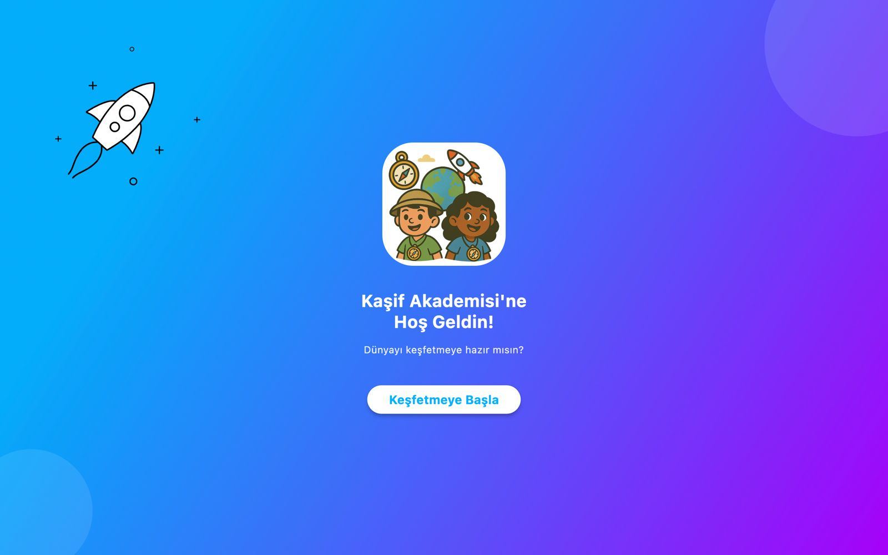
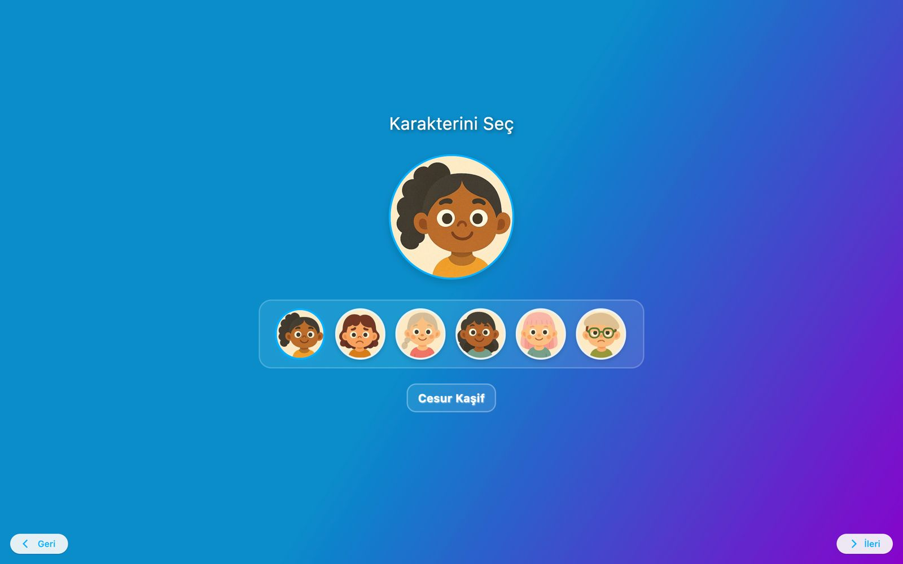
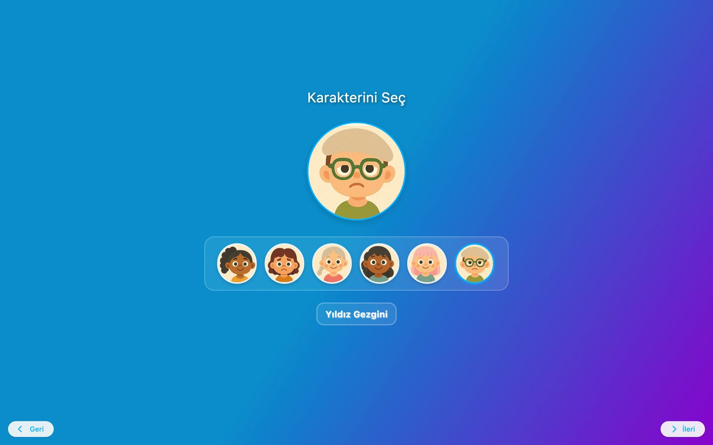

Dilediğin Gibi Keşfet, Öğren, Oyna
Dünya Kaşifi uygulamasıyla çocuklar hem eğleniyor hem de dünyayı tanıyor! Artırılmış gerçeklik ve oyunlaştırma seni bekliyor.




Dünya Kaşifi uygulamasıyla çocuklar hem eğleniyor hem de dünyayı tanıyor! Artırılmış gerçeklik ve oyunlaştırma seni bekliyor.
Dünya Kaşifi, çocukların eğlenerek öğrenmesini hedefleyen yenilikçi bir mobil uygulamadır. Uygulama, artırılmış gerçeklik (AR) teknolojisi ve oyunlaştırma unsurları ile çocuklara farklı kültürleri, ülkeleri, hayvanları ve coğrafi bilgileri interaktif bir şekilde sunar.
Kullanıcılar uygulama içerisinde çeşitli keşif görevleri, eşleştirme oyunları ve 3 boyutlu deneyimlerle hem bilgi kazanır hem de keyifli vakit geçirir. Eğitim teknolojilerini eğlenceyle harmanlayan bu proje, özellikle 6-12 yaş grubundaki çocuklar için tasarlanmıştır.
Harita ekranı: Çocuklar dünyayı keşfetmeye buradan başlar.